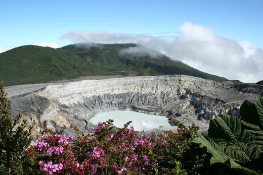
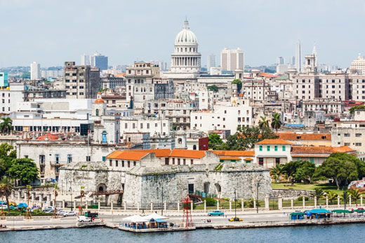
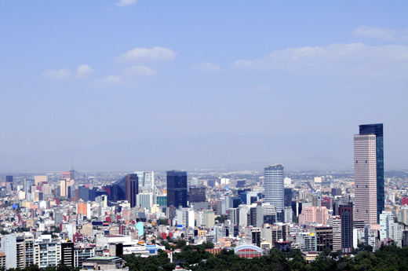
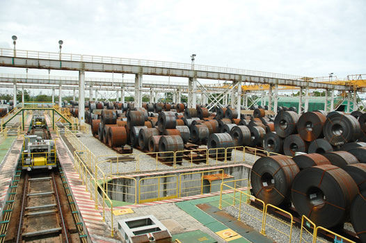
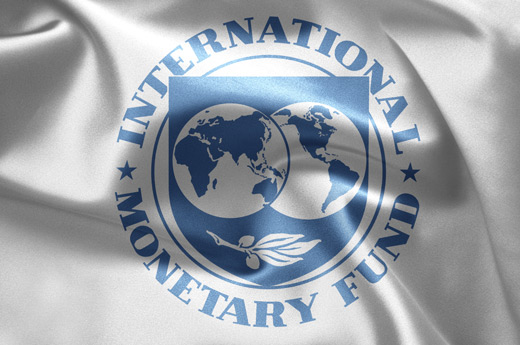
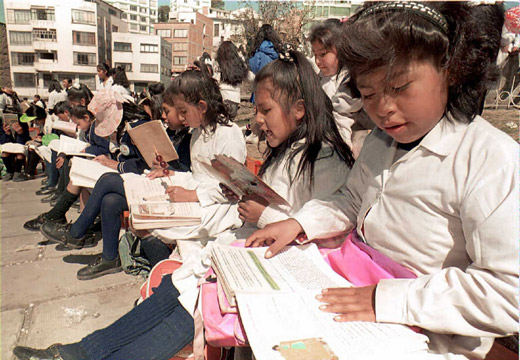
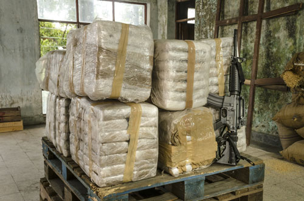

El continente americano se divide en las regiones norte, sur, central y Caribe. Latinoamérica comprende el centro y el sur del continente.
-
01
El continente americano
Open or CloseLa historia de América estuvo definida por procesos coloniales y de independencia, cuyas particularidades fueron definitivas para que el destino de cada una de las regiones del continente haya sido disímil. La calidad de sus democracias o la potencia de sus economías hacen de América del Norte una región muy distinta a las del centro y sur del continente. Así mismo, existen notables diferencias culturales, lingüísticas, religiosas e ideológicas entre las diferentes regiones.

En el ámbito político, desde 1948, América ha buscado construir un destino común. Para ello se conformó la Organización de Estados Americanos (OEA), que busca armonizar las relaciones entre sus distintos miembros, que son la totalidad de los países del continente.
El fin del siglo XX fue para América un periodo de importantes cambios. La mayoría definidos por el reacomodamiento que trajo el fin de la Guerra Fría, la caída del comunismo y la implementación del modelo neoliberal.
01.1Norteamérica
La región del norte del continente está integrada geográficamente por México, Estados Unidos y Canadá. Actualmente, su población supera los 580 millones de habitantes. Aunque entre estos países existen notables diferencias culturales y lingüísticas, desde 1994 pusieron en marcha el Tratado de Libre Comercio de América del Norte (TLCAN). Los tres socios tienen industrias poderosas; Estados Unidos y Canadá en mayor proporción que México. El propósito de este tratado es facilitar el intercambio de productos entre los tres países; no obstante las diferencias internas, particularmente en las políticas de estímulos que despliegan los Estados hacia sus propios productores, generan desbalances y asimetrías en la manera como se dan estos intercambios.
Puente de Brooklyn en Nueva York. México, Estados Unidos y Canadá son los tres países que conforman Norteamérica. Su economía tiene fuentes diversas; por lo tanto, las relaciones comerciales entre ellos son dinámicas y mueven enormes recursos, similares o mayores que los de la Unión Europea. A pesar de ello, internamente, cada país tiene índices de desigualdad y crecimiento diferentes, determinados por la asimetría en la distribución de las rentas y ganancias.
01.2Centroamérica
Centroamérica está integrada por Guatemala, Belice, Honduras, El Salvador, Nicaragua, Costa Rica y Panamá. Desde su proceso de Independencia y hasta los años ochenta fue una región caracterizada por la inestabilidad social y política, amenazada por la pobreza y la desigualdad, con excepción de Costa Rica. Su riqueza natural es inmensa, pues posee áreas con gran biodiversidad.
A finales de siglo XX, Centroamérica logró alcanzar un mayor equilibrio político, sin lograr resolver los problemas de pobreza extrema. En la región se destacan los regímenes presidencialistas, una proliferación de iglesias evangélicas y mayores intercambios comerciales entre los países que la conforman.
Centroamérica tiene indicadores económicos y sociales deficientes, se refleja economías centradas en la exportación de productos agrícolas con enormes problemas de pobreza, salud y educación. Costa Rica mantiene otra tendencia. Considerada la "Suiza de América", es reconocida por sus aceptables estándares de vida y por no tener Fuerzas Armadas.
Durante las décadas de los setenta y ochenta del siglo XX, Guatemala, El Salvador y Nicaragua vivieron conflictos internos graves. Para aquel periodo, movimientos sociales y guerrillas se enfrentaron a regímenes dictatoriales represivos, que estuvieron en cabeza de poderosas familias tradicionales aliadas con las Fuerzas Armadas y grandes empresas de explotación agrícola. Fueron décadas en las que los derechos humanos se violaron de manera sistemática.
Durante la década de los noventa se impulsaron procesos de paz que terminaron con la violencia política. En El Salvador se firmó el acuerdo de paz en 1992, y en Guatemala, en 1996. Sin embargo, la pobreza y la desigualdad trajeron nuevas formas de confrontación lideradas por el narcotráfico, bandas de delincuencia común y pandillas de jóvenes.
Procesos de paz en Centroamérica
La mayoría de los países centroamericanos tuvieron cruentas dictaduras durante la segunda mitad del siglo XX. Esto tuvo como respuesta el surgimiento de grupos armados y movimientos sociales de izquierda. El recrudecimiento de la guerra dejó millones de muertos a lo largo y ancho de la región. En los años noventa se iniciaron distintos procesos con los que se selló la paz.
Desde el punto de vista económico, social y político, los países de Centroamérica cuentan con el SICA (Sistema de la Integración Centroamericana ), que desde 1993 busca promover el intercambio comercial y crear dinámicas de apoyo interregional que garanticen la concordia entre los países miembros.
01.3El Caribe
El Caribe es una región que incluye numerosas islas, algunas de ellas repúblicas independientes, las otras forman parte de potencias europeas o de países de Centroamérica o Suramérica. Dentro de las múltiples islas que forman esta región destacan las Antillas Mayores (conformadas por las islas de Cuba, Haití y República Dominicana, Jamaica y Puerto Rico) y las Antillas Menores (un grupo numeroso de islas de tamaños menores, que se subdivide en islas de Sotavento e islas de Barlovento).
En la región se hablan diferentes idiomas, que incluyen francés, inglés, español y lenguas aborígenes. Para la estabilidad política del continente, dos islas de las Antillas Mayores son muy importantes : Haití y Cuba.
Haití vivió una cruenta dictadura durante casi todo el siglo XX: la dinastía Duvalier sometió a la mayoría de la población a una pobreza extrema. En 1986, con el golpe de Estado del general Henry Namphy, se promulgó una constitución (1987) y se inició un difícil camino hacia la democratización, interrumpido por golpes de Estado, levantamientos populares y la intervención de Estados Unidos.
Casco antiguo de La Habana, Cuba. Algunas sociedades caribeñas tienen estándares de vida altos, pero otras, como la haitiana, considerada la más pobre de América, presenta estándares muy bajos. La región obtiene sus mayores recursos del turismo y de la exportación de productos agrícolas. Desde el punto de vista geopolítico, Cuba es la pieza determinante en la región.
Cuba, tras años de cambios sociales iniciados en 1959, tuvo que vivir un duro periodo de austeridad, propiciado por la caída de la Unión de Repúblicas Socialistas Soviéticas, su principal socio comercial. Aquello implicó que a partir de la década de los noventa inició fundamentalmente un proceso de apertura económica e intercambio comercial con países europeos.
01.4Suramérica
Suramérica está integrada por Argentina, Bolivia, Brasil, Chile, Colombia, Ecuador, Guyana, Paraguay, Perú, Surinam, Uruguay y Venezuela.
La importancia geopolítica de cada uno de los países que componen la región está determinada por su acceso a los océanos que la rodean, así como por la presencia de la cordillera de los Andes. Ambos elementos resultan cruciales para la economía y las relaciones internacionales.
A finales de siglo XX, la totalidad de los países vivieron procesos democráticos tras haber sufrido, la mayoría de ellos, duras dictaduras militares, que terminaron a finales de la década de los ochenta. La inserción en la democracia implicó la ampliación de opciones políticas y una competencia electoral casi siempre armónica; no obstante, la desigualdad permaneció como una de las características más notables.
A pesar de que la caída de la URSS y su repercusión en América se asoció con el fin del comunismo, dos países de la región llegaron al final del siglo con grupos de izquierda que buscaban la toma del poder por vía de las armas: Perú y Colombia. Sendero Luminoso, en Perú, fue derrotado por el gobierno de Alberto Fujimori. En Colombia ha sido necesario esperar el siglo XXI para el desenlace de un nuevo intento de paz.
A su vez, debido a que el modelo neoliberal se impuso a nivel global y ello implica competir con bloques de alto poder económico como la Unión Europea, Estados Unidos y Asia, en la última década del siglo pasado la integración de la región recibió un nuevo impulso. En 1991 se promovió la creación de organismos como Mercosur, inicialmente compuesto por Argentina, Brasil, Paraguay y Uruguay, luego Venezuela.
Mercosur
El Mercosur consiste principalmente en la unión aduanera con arancel externo común para todos los bienes y es, además, un proyecto de coordinación de políticas macroeconómicas comunes con una armonización de las legislaciones, inspirado en la Unión Europea. También es un bloque político que propende por una América Latina en paz sin injerencia ni imposiciones de otros países.
Río de Janeiro, ciudad símbolo de Brasil y atractivo turístico mundial. Brasil pertenece al Mercosur junto con Argentina, Brasil, Uruguay, Paraguay, Venezuela. Tiene acuerdos de libre comercio con Chile (1996), la Comunidad Andina (Bolivia Colombia, Ecuador, Perú, suscrito en el 2004), la India (2004) e Israel (2007).
01.5Consolidación
Actividades para consolidar lo que has aprendido en esta sección.
-
02
La privatización y los tratados de libre comercio en América Latina
Open or CloseDebido a que el modelo neoliberal se impuso a nivel global, el continente americano vivió importantes cambios que garantizaron la adopción de las distintas políticas que dicho modelo impuso mediante la injerencia de la banca internacional (Fondo Monetario Internacional y Banco Mundial), particularmente el libre comercio y la privatización.
El consenso de Washington
Tras la crisis de la deuda vivida en los años ochenta, en la que los países latinoamericanos fueron incapaces de afrontar el compromiso de devolver los empréstitos a la banca internacional, empezó aplicarse un conjunto de medidas conocidas como "el consenso de Washington". Al exigir el pago de la deuda, los acreedores obligaron a los países deudores a emplear gran parte de sus recursos económicos para intentar cubrir el creciente déficit. Esto implicó que los Estados disminuyeron el gasto social para pagar la deuda.
Debido a la gran cantidad de excedentes agrícolas e industriales que produce Estados Unidos, y a su interés por recuperar la hegemonía frente a países que resultaron ser grandes competidores (China, Japón, Alemania), el país del norte intentó, en 1994, promover el Area del Libre Comercio para las Américas.
Distrito Financiero en Ciudad de México. Este país forma parte de varios de los múltiples acuerdos que se han ido firmando entre distintos bloques de países, tras el fracaso del Alca, iniciativa promovida por Estados Unidos. México hace parte del Grupo de los Tres (Colombia, México, Venezuela). Tiene acuerdos de libre comercio con Canadá y Estados Unidos (1992), Bolivia (1994), Costa Rica (1994), Nicaragua (1997), Chile (1998), la Asociación Europea de Libre Comercio (2000), Israel (2000), la Unión Europea (2000), El Salvador, Guatemala, Honduras (2001), Uruguay (2003) y Japón (2004).
El principio del Alca era que todos compitieran en igualdad de condiciones y que los socios ganaran y ninguno perdiera. No obstante las ventajas de Estados Unidos frente a los demás países eran evidentemente superiores, lo que llevó a que pocos aceptaran vincularse al proyecto. El Alca no se hizo realidad y Estados Unidos debió buscar socios para acuerdos o tratados bilaterales.
De otra parte, el Consenso de Washington instó a que los Estados latinoamericanos privatizaran la mayor parte de empresas del sector público y a que redujeran el gasto social. Esto agravó la situación de la población al aumentar los índices de pobreza y exclusión. Lo anterior significó el fin de un periodo en el cual los Estados habían sido los responsables de garantizar el acceso a la educación, los servicios públicos, la salud y la infraestructura vial (carreteras, puertos, aeropuertos, entre otros).
Esta dinámica se mantuvo hasta el final del milenio, cuando empezaron a surgir gobiernos que se desmarcaron del Consenso de Washington, por lo que fueron considerados como "gobiernos de izquierda".
Aunque Estados Unidos y Canadá lograron contener por un tiempo los efectos del modelo neoliberal, su aplicación no se hizo esperar. En los años ochenta y noventa, cientos de empresas se fusionaron, lo que trajo consigo un aumento en las tasas de desempleo. No obstante, los gobiernos de esos países se enfrentan a sindicatos mucho más fuertes y menos perseguidos que los sindicatos latinoamericanos, lo que dificulta el camino de las privatizaciones.

El interés de mantenerse como potencias industriales obliga a Canadá y Estados Unidos a garantizar niveles mínimos en la calidad de vida de su clase obrera. Caso distinto es el de los países latinoamericanos, con industrias débiles y con un rol de exportadores de bienes primarios.
02.1Consolidación
Actividades para consolidar lo que has aprendido en esta sección.
-
03
La economía de América Latina
Open or CloseEn la década de los setenta, los países latinoamericanos, y particularmente los que tuvieron regímenes militares, adquirieron enormes deudas para invertir en proyectos de infraestructura y seguridad. Aquellos préstamos conforman la enorme deuda externa latinoamericana, que constituye un obstáculo para el desarrollo real del continente. Los préstamos se suscribieron con altos intereses, lo que ha hecho más difícil su pago.
Desde la década de los ochenta, los países latinoamericanos fueron incapaces de afrontar el compromiso de devolver los empréstitos que, al acumularse, incrementaron constantemente el volumen global de la deuda. Al exigir el pago de la deuda, los acreedores (bancos internacionales) obligaron a los países deudores a emplear gran parte de sus recursos económicos para cubrir el creciente déficit.
La década pérdida es el nombre que reciben los años ochenta debido a que los países latinoamericanos estuvieron impedidos para hacer inversión social, pues debieron destinar la mayor parte de sus ingresos al pago de los intereses de la deuda externa.
Estas políticas orientadas al pago de la deuda trajeron graves consecuencias para América Latina. Por una parte, el crecimiento económico se vio estancado en los años ochenta debido a que gran parte del producto interno bruto se orientó a dicho pago. No obstante, llegó una recuperación importante pero momentánea en 1990, en parte gracias a la venta de empresas nacionales a inversionistas extranjeros.
Distinto a los países industrializados de Norteamérica, los de Centro y Suramérica concentraron su actividad en la extracción y exportación de materias primas, lo que generó mayor dependencia y vulnerabilidad ante las fluctuaciones de los precios de dichos recursos. El impulso a la industria se hizo cada vez más lento, lo que desaceleró la producción y, a su vez, generó altas tasas de desempleo.
03.1La crisis de la deuda
Los años ochenta fueron de decrecimiento y crisis. En los años noventa hubo un repunte impulsado por el ingreso de capitales extranjeros a las cuentas nacionales. Esto se presentó como consecuencia de la venta de empresas de servicios y de préstamos de la banca internacional. El crecimiento, sin embargo, tuvo un punto de caída generado por el llamado "efecto Tequila" que se vivió en México en 1994 y que estuvo a punto de convertirse en una crisis global.
Pocos años antes México había recibido un flujo de capitales destinados a mejorar la economía nacional. El presidente Bill Clinton fue uno de los impulsores de estos movimientos de capital, cuyo propósito era que México pagara su deuda. En 1994, México devaluó el peso y esto estimuló la fuga de capitales extranjeros, lo que trajo como consecuencia el cierre de empresas e inversiones y con ello parálisis productiva y desempleo.
03.2Consolidación
Actividades para consolidar lo que has aprendido en esta sección.
-
04
La política y la sociedad en América Latina
Open or CloseDesde los años ochenta, la región latinoamericana vivió múltiples crisis. Sin embargo, la que definió su destino político y económico fue la crisis de la deuda.
Dicha crisis terminó sometiendo a los Estados latinoamericanos a una dinámica en la que el diseño y aplicación de las políticas públicas estuvo determinada por el llamado Consenso de Washington y las directrices del Fondo Monetario Internacional. Algunos de los principales preceptos fueron los siguientes:
- Disciplina y reforma fiscal: determinada por el aumento de impuestos a los consumidores.
- Reordenación de las prioridades del gasto público: determinada por el recorte al gasto social.
- Liberalización del comercio y de la inversión extranjera directa: apertura total a un intercambio sin aranceles.
- Privatizaciones: venta de bienes públicos y nacionales a propietarios de origen privado.
La aplicación de estas directrices requirió que el Estado fuera ocupado por una nueva clase política que reorientó el funcionamiento siguiendo los lineamientos del Consenso de Washington. Fue el caso de Carlos Menem en Argentina, Carlos Salinas de Gortari y Ernesto Zedillo en México, Alberto Fujimori en Perú, César Gaviria en Colombia y Carlos Andrés Pérez en Venezuela, entre otros.
En América Latina, los años noventa se caracterizaron por la explosión del problema de la deuda externa, hecho que llevó a que algunos países se declararan en mora porque no tenían recursos para pagarla. Esta situación fue controlada con la aplicación de una serie de medidas contenidas en el Consenso de Washington y ordenadas por el Fondo Monetario Internacional.
04.1Los efectos sociales del neoliberalismo en América Latina
La disminución del gasto social, las privatizaciones y el aumento de impuestos que derivaron del Consenso de Washington produjeron importantes efectos sociales en América Latina.
Hasta 1980, el Estado había tenido un protagonismo central como garante de los derechos ciudadanos. La llegada de las reformas neoliberales trajo consigo un cambio en el orden social. La privatización de servicios de salud y educación, así como los despidos que se originaron una vez las empresas públicas pasaron a manos privadas, aumentó el costo de vida y generó mayores tasas de desempleo.
Además, debido a que el neoliberalismo contempla un cambio de las funciones para el Estado, pasó a ser la sociedad civil la responsable de garantizar la satisfacción de algunas necesidades básicas. Por lo anterior, durante este periodo surgieron las ONG (organizaciones no gubernamentales), que se encargaron de crear soluciones momentáneas para aliviar problemáticas de las que el Estado empezó a desentenderse. La mayor consecuencia que resultó de este panorama fue el empobrecimiento de gran parte de la población.
04.2Consolidación
Actividades para consolidar lo que has aprendido en esta sección.
-
05
La corrupción y la violencia luego de los procesos de paz
Open or CloseEn los años noventa, luego de la caída del muro de Berlín y de la Unión de Repúblicas Socialistas Soviéticas, el mundo creyó terminadas las ideologías y, con ellas, el comunismo. En América Latina se impulsaron algunos procesos de paz que buscaron acabar con conflictos de larga duración, como el guatemalteco y el salvadoreño.
En principio estos acuerdos arrojaron resultados satisfactorios al no presentarse un resurgimiento de grupos insurgentes. No obstante, el llamado posconflicto quedó inacabado debido a que las sociedades de aquellos países no estuvieron lo suficientemente preparadas para darles un lugar a los excombatientes.
Esta situación, sumada al auge del narcotráfico, llevó a que los países centroamericanos empezaran a sufrir un nuevo fenómeno, el de pandillas transnacionales, algunas de ellas conocidas como las "maras". Su carácter transnacional está determinado por dos aspectos: la condición de migrantes que tienen la mayoría de sus integrantes y su ubicación, ya que extienden su presencia y poder en diversos puntos de Centroamérica, en conexión con Estados Unidos. Su móvil es el tráfico de estupefacientes y su comportamiento es asumido como una de las nuevas amenazas que debe enfrentar la región.
En Latinoamérica hay un recrudecimiento de la violencia en todas sus expresiones, desde la política hasta la común. Buena parte deriva de procesos de paz que dejaron estructuras militares que luego fueron aprovechadas por diferentes organizaciones delincuenciales.
05.1Consolidación
Actividades para consolidar lo que has aprendido en esta sección.
-
06
Los efectos del neoliberalismo en la salud y en la educación
Open or CloseDesde finales del siglo XX, los sistemas educativos y de salud son los eslabones más débiles de las sociedades latinoamericanas.
En América Latina, de acuerdo con datos de la Comisión Económica para América Latina y el Caribe (Cepal), al finalizar el siglo XX solo uno de cada dos jóvenes terminaba sus estudios secundarios. Si se centra la mirada en la población más pobre, uno de cada tres jóvenes concluía la secundaria. Entretanto, en Estados Unidos la tasa de graduados universitarios es una de las más altas del mundo.
La salud, por su parte, fue uno de los servicios más afectados con las medidas neoliberales. Su privatización llevó a que una gran parte de la población quedara sin acceso. Esta situación se da desde finales del siglo XX en la mayoría del continente, incluyendo a Estados Unidos, en donde cerca 50 millones de habitantes tienen poco o ningún acceso.
Aunque en el continente ha habido avances significativos en la erradicación del analfabetismo, los Estados tienen el reto de garantizar, además del acceso a una educación básica, el ingreso de sectores más amplios a la educación superior.
06.1Consolidación
Actividades para consolidar lo que has aprendido en esta sección.
-
07
Los Estados Unidos y la globalización
Open or CloseA finales del siglo XX, el mundo entró en un proceso conocido como globalización, que implicó que empresas, habitantes, sociedades, culturas y Gobiernos de diferentes latitudes se integraran e interactuaran. Su inicio coincidió con una ola de políticas neoliberales fomentadas desde Estados Unidos durante el gobierno de Ronald Reagan, y desde el Reino Unido, con Margaret Thatcher.
El detonante inicial fue la pérdida de hegemonía que experimentó Estados Unidos a raíz de la guerra del Yom Kippur y de la derrota en Vietnam, que le generó grandes pérdidas económicas. Ambas circunstancias llevaron a que el país del norte, y también sus aliados más cercanos, quisieran recuperar su poderío buscando mercados para la distribución de sus productos y para la instalación de sus empresas en distintos puntos del globo.
Ronald Reagan, uno de los promotores del neoliberalismo. El poder de la globalización se debe, en gran medida, al enorme desarrollo de las tecnologías de la información y de las comunicaciones, a los avances en el comercio y a la circulación de capitales de inversión en el ámbito internacional.
Por lo anterior, con la aplicación del neoliberalismo se impulsó la apertura de mercados, lo cual se logró mediante tratados de libre comercio binacionales o entre varios países. Para ello, los Gobiernos rebajaron los aranceles o impuestos a las importaciones de bienes, servicios e inversiones. También facilitaron la instalación de fábricas de empresas extranjeras en sus territorios para reducir los costos de mano de obra.
07.1La globalización
La globalización descansa sobre una estructura financiera y comercial de carácter internacional y tiene efectos sobre el ambiente, la política, la cultura y la economía, entre otros aspectos.
La economía y el comercio han crecido gracias a los alcances de la tecnología, que le ofrece a consumidores, inversionistas, comerciantes y en general a todas las personas, herramientas que les permiten interactuar en tiempo real entre un extremo y otro del planeta. Además, posibilita información para hacer análisis más rápidos de las tendencias económicas, hacer transferencias de bienes y colaborar con clientes o socios ubicados en otras latitudes.
Las discusiones sobre la globalización son interminables. Los defensores aseguran que, gracias a ella, sociedades y países pobres pueden mejorar su situación económica, ya que permite intercambiar productos a buenos precios y de alta calidad. Los críticos sostienen que beneficia especialmente a los países desarrollados, a las multinacionales y a los inversionistas de capitales.
Al finalizar el siglo XX, la oposición a la globalización y a las políticas neoliberales cobró adeptos en diversas partes del mundo, especialmente cuando los gobiernos se preocuparon por el control de capitales, trabajo y bienes.
En cuanto a la economía y la política, la globalización implica unificación de mercados, sociedades y culturas, lo que genera cambios en aspectos sociales, económicos y políticos. Unificación quiere decir que se priorizan unas formas de producción y de movimientos de capital que son realizados desde Estados Unidos o desde otros países desarrollados.
La producción, por ejemplo, se divide entre diferentes países y la venta de los productos finales sigue criterios estandarizados que en ocasiones escapan al control de los Estados.
La tecnología en la actual globalización integra transporte y telecomunicaciones, que facilitan el acceso inmediato a la información y, si hay ciudadanos preparados, al conocimiento. Muchos consideran que la globalización abolirá las fronteras financieras mediante la integración de los mercados.
No obstante, los críticos valoran de otra manera el momento actual. Sostienen que el fin de las fronteras, las diferencias étnicas, las confesiones religiosas, las ideologías políticas o de las condiciones socioeconómicas tardará mucho en llegar, aunque afirman la conformación de un sistema económico de alcance mundial y una tendencia de la concentración de los medios masivos de comunicación, que impide la libertad de pensamiento, información y opinión [VER].
07.2La política y las relaciones internacionales de Estados Unidos
La política y las relaciones internacionales de Estados Unidos en el último cuarto del siglo XX se caracterizaron por la ampliación de su poderío militar y la expansión de su campo de acción hacia territorios de Oriente Medio, así como el endurecimiento de la llamada guerra de baja intensidad en América Latina [VER].
Gracias a esas medidas, Estados Unidos recuperó su lugar en el mundo, no obstante, aumentó la desigualdad social. La administración de George Bush (1988-1992) enfrentó una fuerte crisis económica interna y adelantó la negociación con Mijail Gorbachov y otros líderes soviéticos para el derrumbe definitivo de la Unión Soviética.
Las aspiraciones de reelección de Bush fueron superadas por la candidatura demócrata de Bill Clinton, quien gobernó el país entre 1993 y 2001. Esta administración hizo frente al problema de Kosovo, promovió la paz en Oriente Medio, endureció las sanciones contra Cuba y promovió mejores relaciones con América Latina.
Los presidentes que gobernaron Estados Unidos al final del siglo XX y comienzos del XXI: Jimmy Carter, Barack Obama, George Bush, Bill Clinton, George H. W. Bush.
07.3Las guerras internacionales
Aunque la Guerra Fría llegó a su fin, Estados Unidos prosiguió la política intervencionista en la región centroamericana, con episodios como la invasión de Panamá y la detención del dictador Manuel Noriega (diciembre 1989).
Tras la caída del comunismo, Estados Unidos creyó vencer a su principal amenaza. No obstante, un nuevo flagelo se convirtió en la causa para otras intervenciones y un mayor rearme: el narcotráfico. Una nueva forma de violencia se desató en varios países. Sin embargo, uno de los epicentros fue Colombia, en donde poderosas mafias se enfrentaron por el control del mercado estadounidense y de la producción local, hecho que causó numerosas víctimas. Esta situación estimuló una mayor presencia de pie de fuerza y cuerpos de inteligencia norteamericanos en América Latina, lo cual contribuyó a recrudecer el conflicto.
A finales de siglo XX el mundo occidental creyó vencer a su mayor enemigo, el comunismo. Sin embargo, debió enfrentar una amenaza que se volvió más compleja: el narcotráfico.
07.4La administración de George H. W. Bush
George H. W. Bush fue presidente de Estados Unidos entre 1989 y 1993. Fue un periodo en el que Estados Unidos concentró su estrategia hegemónica en la caída del bloque soviético. No obstante, las relaciones con América Latina no se descuidaron y se concentraron, particularmente, en la aplicación de la "iniciativa Brady", cuyo fin fue la recuperación económica de la región para garantizar el pago de la deuda externa.
La invasión a Panamá y "El Caracazo" fueron dos de los acontecimientos más notables ocurridos en la región latinoamericana durante la presidencia de Bush.
El 20 de diciembre de 1989, las tropas estadounidenses invadieron Panamá. Como resultado de esta intervención murieron entre 2000 y 10 000 personas, y las pérdidas económicas alcanzaron los 2000 millones de dólares. El presidente Noriega fue detenido y trasladado a Estados Unidos (1990). Tras la invasión, las tropas estadounidenses permanecieron como fuerza de ocupación.
"El Caracazo", ocurrido en febrero de 1989, fue la expresión del descontento popular que empezaba a vivirse en América Latina por los ajustes dictados por la banca internacional. Los programas de austeridad y privatización aumentaron los precios de la gasolina, del transporte público y de los alimentos, lo que desencadenó una oleada de violencia en Caracas, protagonizada por las clases populares. Esta sería la semilla para que una década después surgiera en ese país y en el resto de la región gobiernos de orientación de izquierda.
07.5La administración de Bill Clinton
Siendo presidente entre 1993 y 2001, Bill Clinton se destacó principalmente por provomer tratados de libre comercio con los países del continente. El Nafta o TLCAN fue el principal de ellos, firmado por ese país, México y Canadá.
En el campo político se destaca la Ley Helms-Burton, que endureció aún más el embargo establecido para Cuba desde 1960.
En 1994, Clinton puso en marcha la "operación restaurar la democracia", una intervención militar de fuerzas aliadas lideradas por Estados Unidos que pretendió devolverle la estabilidad política a Haití. Esta intervención implicó violaciones a los derechos humanos y mayor empobrecimiento de los pobladores haitianos.
07.6Consolidación
Actividades para consolidar lo que has aprendido en esta sección.
-
08
Competencias
Open or ClosePon a prueba tus capacidades y aplica lo aprendido con estos recursos.
-
Fin de unidad:
Open or Close
repaso